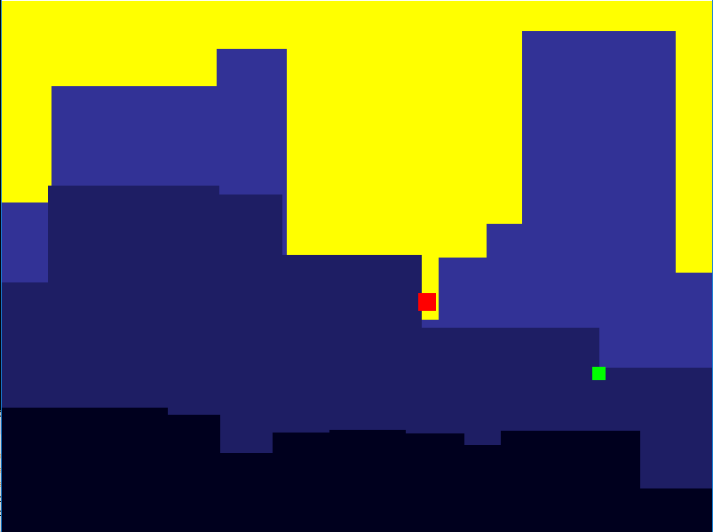

Runner Game
from cityscroller_background import Scroller
import pygame
import random
# Define some colors
BLACK = (0, 0, 0)
WHITE = (255, 255, 255)
GREEN = (0, 255, 0)
RED = (255, 0, 0)
BLUE = (0, 0, 255)
GREY = (129, 129, 129)
colors = [BLACK, GREEN, BLUE, RED]
YELLOW=(255,255,0)
# initialize the pygame class
pygame.init()
# Set the width and height of the screen [width, height]
SCREEN_WIDTH = 800
SCREEN_HEIGHT = 600
screen = pygame.display.set_mode((SCREEN_WIDTH, SCREEN_HEIGHT))
# Set the title of the window
pygame.display.set_caption("Runner Game")
# Loop until the user clicks the close button.
done = False
# Used to manage how fast the screen updates
clock = pygame.time.Clock()
class RunnerSprite(pygame.sprite.Sprite):
def __init__(self, color, width, height):
pygame.sprite.Sprite.__init__(self)
self.width = width
self.height = height
self.color = color
self.image = pygame.Surface([self.width, self.height])
self.image.fill(self.color)
self.rect = self.image.get_rect()
def update(self, screen):
self.rect.x += 5
xran= random.randint(0,10)
yran= random.randint(0, 600)
'''
self.x =self.rect.bottom+5
self.y = self.rect.top+5
self.rect.move(self.x,self.y)
'''
#self.rect.midright= (xran, yran)
if self.rect.x>800 or self.rect.x<0:
#xran = -xran
self.rect.midright =(xran, yran)
if self.rect.y>600 or self.rect.y<0:
#yran= -yran
self.rect.midright =(xran, yran)
RunnerSprite1 = RunnerSprite(RED, 20, 20)
goodsprite= RunnerSprite(GREEN, 15, 15)
all_sprites_list = pygame.sprite.Group()
#all_sprites_list = []
#not literally a list
#just kind of acts like it
#but it's an object "container"
good_sprites= pygame.sprite.Group()
good_sprites.add(goodsprite)
FRONT_SCROLLER_COLOR = (0,0,30)
MIDDLE_SCROLLER_COLOR = (30,30,100)
BACK_SCROLLER_COLOR = (50,50,150)
front_scroller = Scroller(SCREEN_WIDTH, 400, SCREEN_HEIGHT, FRONT_SCROLLER_COLOR, 3, screen)
middle_scroller = Scroller(SCREEN_WIDTH, 200, (SCREEN_HEIGHT - 50), MIDDLE_SCROLLER_COLOR, 2, screen)
back_scroller = Scroller(SCREEN_WIDTH, 20, (SCREEN_HEIGHT - 100), BACK_SCROLLER_COLOR, 1, screen)
# -------- Main Program Loop -----------
while not done:
# --- Main event loop
for event in pygame.event.get():
if event.type == pygame.QUIT:
done = True
# background image.
screen.fill(YELLOW)
# --- Drawing code should go here
back_scroller.draw_buildings()
back_scroller.move_buildings()
middle_scroller.draw_buildings()
middle_scroller.move_buildings()
front_scroller.draw_buildings()
front_scroller.move_buildings()
all_sprites_list.add(RunnerSprite1)
all_sprites_list.draw(screen)
good_sprites.draw(screen)
for element in good_sprites:
element.update(screen)
position = pygame.mouse.get_pos()
RunnerSprite1.rect.midright = position
# --- Go ahead and update the screen with what we've drawn.
pygame.display.flip()
# --- Limit to 60 frames per second
clock.tick(60)
# Close the window and quit.
pygame.quit()
exit() # Needed when using IDLE
